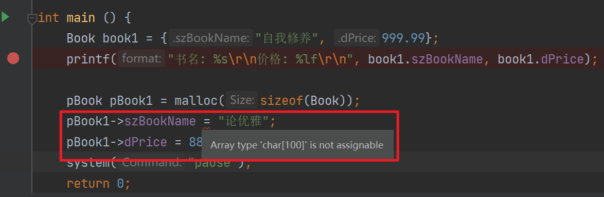
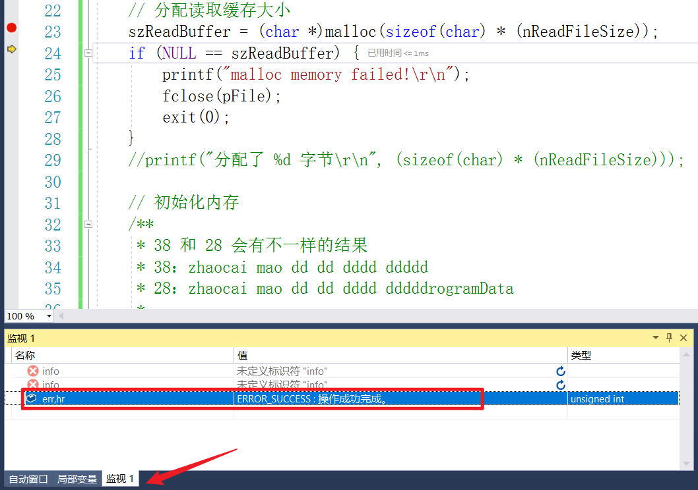
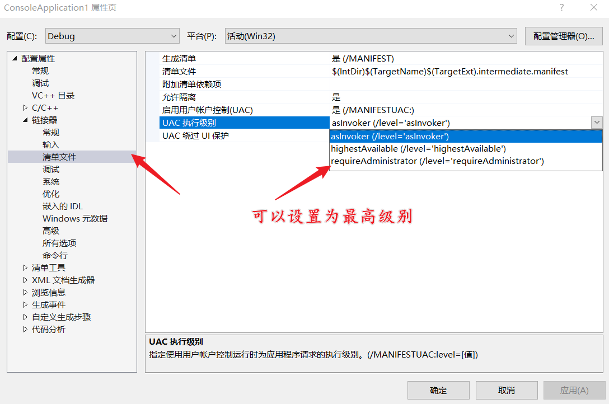
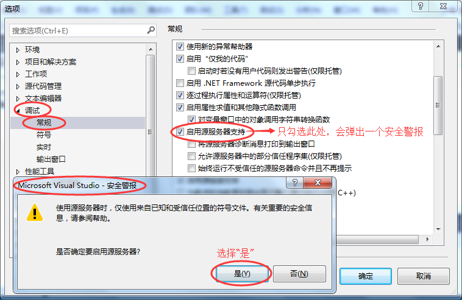

预处理
| 指令 | 描述 |
|---|---|
| #define | 定义宏，简单替换，不会考虑逻辑 |
| #include | 包含一个源代码文件 |
| #undef | 取消已定义的宏 |
| #ifdef | 如果宏已经定义，则返回真 |
| #ifndef | 如果宏没有定义，则返回真 |
| #if | 如果给定条件为真，则编译下面代码 |
| #else | #if 的替代方案 |
| #elif | 如果前面的 #if 给定条件不为真，当前条件为真，则编译下面代码 |
| #endif | 结束一个 #if……#else 条件编译块 |
| #error | 当遇到标准错误时，输出错误消息 |
| #pragma | 使用标准化方法，向编译器发布特殊的命令到编译器中 |
参数化的宏
CPP 一个强大的功能是可以使用参数化的宏来模拟函数。例如，下面的代码是计算一个数的平方：
int square(int x) {
return x * x;
}
我们可以使用宏重写上面的代码，如下：
#define square(x) ((x) * (x))
在使用带有参数的宏之前，必须使用 #define 指令定义。参数列表是括在圆括号内，且必须紧跟在宏名称的后边。宏名称和左圆括号之间不允许有空格。
条件编译
条件编译（conditional compiling）命令指定预处理器依据特定的条件来判断保留或删除某段源代码。
条件编译区域以 #if、#ifdef 或 #ifndef 等命令作为开头，以 #endif 命令结尾。条件编译区域可以有任意数量的 #elif 命令，但最多一个 #else 命令。
| 条件编译指令 | 说 明 |
|---|---|
| #if | 如果条件为真，则执行相应操作 |
| #elif | 如果前面条件为假，而该条件为真，则执行相应操作 |
| #else | 如果前面条件均为假，则执行相应操作 |
| #endif | 结束相应的条件编译指令 |
| #ifdef | 如果该宏已定义，则执行相应操作 |
| #ifndef | 如果该宏没有定义，则执行相应操作 |
- 作为 #if 或 #elif 命令条件的表达式，必须是整数常量预处理器表达式。
- 一元运算符 defined 可以出现在 #if 或 #elif 命令的条件中。
if、#elif、#else 和 #endif 指令 (C/C++) | Microsoft Learn
#if
defined 标识符
defined (标识符)
!defined (标识符)
#elif
#else
#endif
#ifdef
#ifndef
---------
#include <stdio.h>
#include <stdlib.h>
#if _WIN32
int g_OS = 0;
#elif __LINUX__
int g_OS = 1;
#endif
int main () {
printf("%d\r\n", g_OS);
system("pause");
return 0;
}
结构体
struct _Test {
xxx
};
// 起别名，相当于
// typedef struct _Test Test;
// typedef struct _Test* pTest;
typedef struct _Test {
xxx;
}Test, *pTest;
// 使用
struct _Test test = {xxxx};
// 或者使用别名
Test test = {xxx};
// 使用typedef 起别名后以下是等价的
==> struct _Test == Test
==> struct _Test * == pTest
// C 语言提供了 typedef 关键字，您可以使用它来为类型取一个新的名字。下面的实例为单字节数字定义了一个术语 BYTE：
typedef unsigned char BYTE;
// 在这个类型定义之后，标识符 BYTE 可作为类型 unsigned char 的缩写
对数组成员的赋值

/**
* 和以下错误一致，由于数组名是数组的首地址。
* 数组名表示常量，不允许对常量赋值，所以常量不允许出现在 “=” 的左边，作为左值出现，所以不能直接用字符串赋值给数组名。
* 可以在定义字符数组的同时用字符串给字符数组赋初值。
*/
char szName[20] = "zhaocai";
szName = "zhaocaimao"; // error
#include <stdio.h>
#include <stdlib.h>
#include <string.h>
typedef struct _BOOK {
char szBookName[100];
double dPrice;
}Book, *pBook;
int main () {
Book book1 = {"自我修养", 999.99};
printf("书名: %s\r\n价格: %lf\r\n", book1.szBookName, book1.dPrice);
// 动态分配内存
pBook pBook1 = malloc(sizeof(Book));
// pBook1->szBookName = "论优雅"; // error
strcpy(pBook1->szBookName,"论优雅"); // ok
pBook1->dPrice = 888.88;
printf("书名: %s\r\n价格: %lf\r\n", pBook1->szBookName, pBook1->dPrice);
system("pause");
return 0;
}
- 结构体分匹配的内存是连续的
- 分配内存
malloc(sizeof(struct xxx)) . 和 -> 的区别
一般指针用
->形式访问成员。相同点：两个都是二元操作符，其右操作符是成员的名称。
不同点：点操作符左边的操作数是一个“结果为结构”的表达式；
箭头操作符左边的操作数是一个指向结构的指针。
内存对齐
指针加法，类型步进【即 +1 就是加一个类型宽度】
类型 对齐方式（变量存放的起始地址相对于结构的起始地址的偏移量） char 偏移量必须为 sizeof(char) 即 1 的倍数 int 偏移量必须为 sizeof(int) 即 4 的倍数 float 偏移量必须为 sizeof(float)即 4 的倍数 double 偏移量必须为 sizeof(double) 即 8 的倍数 short 偏移量必须为 sizeof(short) 即 2 的倍数 long 偏移量必须为 sizeof(long) 即 4 的倍数 long long 偏移量必须为 sizeof(long long) 即 8 的倍数
编译器为了提高 CPU 的存储速度， 会对变量的起始地址做了对齐处理 。
结构体成员对齐是可以进行设置的，比如
Visual Studio --> 属性 --> c/c++ --> 代码生成 --> 结构体成员对齐：注意此处修改的必须是 2^ 的整数倍，不然无法对齐。
- 1 字节（/Zp1）
- 2 字节（/Zp2）
- 4 字节（/Zp4）
- 8 字节（/Zp8）
- 16 字节（/Zp16）
还可以通过 #pragma pack(n) 来设定变量以 n 字节对齐方式。
n 字节对齐就是说变量存放的起始地址的偏移量有两种情况：
- 第一、如果 n 大于等于该变量所占用的字节数，那么偏移量必须满足默认的对齐方式，
- 第二、如果 n 小于该变量的类型所占用的字节数，那么偏移量为 n 的倍数，不用满足默认的对齐方式。
结构的总大小也有个约束条件，分下面两种情况：如果 n 大于所有成员变量类型所占用的字节数，那么结构的总大小必须为占用空间最大的变量占用的空间数的倍数；否则必须为 n 的倍数。
#pragma pack(push) //保存对齐状态
#pragma pack(4)//设定为4字节对齐
struct test{
char m1;
double m4;
int m3;
};
#pragma pack(pop)//恢复对齐状态
// 1 + 4 + 8 + 4 = 16
#include <stdio.h>
/**
* sizeof(Info) = 40
* 变量总和 = 6 + 4 + 8 + 2 + 4 + 1 = 25
* 最大对齐 * 成员个数 = 48
* 为什么是 40 呢？
* MSVC 默认对齐是 8 字节（/Zp8）
* 结构体成员对齐公式：（成员偏移，相对于结构体首地址的偏移）
* member offset % min(ZpValue, sizeof(member type)) == 0
* 结构体对齐公式：
* 对齐后的结构体大小 % max(member type) == 0
*/
// 计算结构体的长度
typedef struct _Info {
char szValue[6]; // +0 偏移
float fValue; // +8【理论上 float 偏移为 0+6 = +6 偏移，实际上根据结构体对齐 offset % min(8, 4) == 0，offset 为 6 不行，7 也不行，最小为 8，即 8 % 4 == 0】对齐了 2 字节
double dbValue; // +16【以此类推，理论上为 8 + 4（float 占 4 字节） = 12 偏移，实际上 offset % min(8, 8) == 0，offset 最小为 12，13，...，16，即 16 % 8 == 0】对齐了 4 字节
short sValue; // +24【16 + 8（double 占 2 字节） = 24，那么 offset % min(8, 2) == 0，即 24 % 2 == 0】
int nValue; // +28【24 + 2 = 26，那么 offset % min(8, 4) == 0，即 28 % 4 == 0】对齐了 2 字节
char cValue; // +32【28 + 4 = 32，那么 offset % min(8, 1) == 0，即 32 % 1 == 0】
}Info, *pInfo; // 那么就是成员之间的对齐就是 32 + 1（最后的 char 占 1 个字节） = 33，【一共对齐了 8 字节】最后整个结构体也需要对齐。
// 就是 33 % max(member type) == 0，这个结构体最大的是 double 8 字节，即 33 % 8 == 0。33,34,...,40 最小到 40 才能 40 % 8 == 0
int main() {
Info info = {"zhaoc", 2.22f, 3.33, 222, 0xFFFFFFFF, 'c'};
Info info1;
// char c = 'c';
// printf("%x\r\n", c);
printf("%d\r\n", sizeof(info1)); // 40
printf("%d\r\n", sizeof(info));
/** &info 【'c' 为 63】
* 7a 68 61 6f zhao == 7a 68 61 6f
* 63 00 00 00 c\0 == 63 00 cc cc
* 7b 14 0e 40 float == 7b 14 0e 40
* f6 7f 00 00 对齐 == cc cc cc cc
* a4 70 3d 0a double == a4 70 3d 0a
* d7 a3 0a 40 double == d7 a3 0a 40
* de 00 00 00 short == de 00 cc cc
* ff ff ff ff int == ff ff ff ff
* 63 10 63 ed char == 63 cc cc cc
* f6 7f 00 00 对齐 == cc cc cc cc
* ------还是 visual Studio 的对齐方式更好看一些
* 那么按道理来说一共是 33 字节，为什么是 40 呢？
*/
return 0;
}
如果上面的 char 数组大小改为 9 呢？结果又是多少【还是 40 ，哈哈哈哈】，怎么对齐的？
成员对齐了 5 字节，结构体也是对齐了 7 字节。结构体按类型对齐，非数组大小。
// 计算结构体的长度
typedef struct _Info {
char szValue[9]; // +0 偏移，相对于结构体首地址的偏移
float fValue; // +12【理论上是 9，对齐了 3 字节】
double dbValue; // +16【理论上和实际上都是 16，不用对齐】
short sValue; // +24【理论上和实际上都是 24，不用对齐】
int nValue; // +28【理论上是 26，对齐了 2 字节】
char cValue; // +32【理论上和实际上都是 32，不用对齐】
}Info, *pInfo; // 那么就是成员之间的对齐就是 32 + 1（最后的 char 占 1 个字节） = 33，最后整个结构体也需要对齐。
// 就是 33 % max(member type) == 0，这个结构体最大的类型还是 double 8 字节，即 33 % 8 == 0。33,34,...,40 最小到 40 才能 40 % 8 == 0
如果 double 改成 long double 那么就是 33 % 16 == 0，需要再加 15 字节，即 48 % 16 == 0
char szValue[99] 呢？【128】
// 计算结构体的长度
typedef struct _Info {
char szValue[99]; // +0 偏移
float fValue; // +100【理论上是 99，对齐了 1 字节】
double dbValue; // +104【理论上和实际上都是 104，不用对齐】
short sValue; // +112【理论上和实际上都是 112，不用对齐】
int nValue; // +114【理论上和实际上都是 114，不用对齐】
char cValue; // +120【理论上是 118，对齐了 2 字节】
}Info, *pInfo; // 那么就是成员之间的对齐就是 120 + 1（最后的 char 占 1 个字节） = 121，最后整个结构体也需要对齐。
// 就是 121 % max(member type) == 0，这个结构体最大的类型还是 double 8 字节，即 121 % 8 == 0。121,122,...,128 最小到 128 才能 128 % 8 == 0
补充：嵌套类型（含结构体成员）
/**
* 规则一：结构体中的第一个成员位置在偏移量 0，之后每个变量的偏移量必须是它本身字节数的整数倍。
* 规则二：如果结构体中嵌套结构体，那么嵌套的结构体的偏移量必须是它最大成员的字节数的整数倍。
* ★规则三：结构体的总偏移量必须是它最大成员字节数的整数倍（包括嵌套的结构体中的最大成员）。★
* 如果一个结构体 B 里嵌套另一个结构体 A，还是以最大成员类型的字节对齐，但是结构体 A 存储起点为 A 内部最大成员整数倍的地方。
* （struct B 里存有 struct A，A 里有 char，int，double 等成员，那 A 应该从 8 的整数倍开始存储。）
* 结构体 A 中的成员的对齐规则仍满足自身的规则
* 注意：
1）结构体 A 整体所占的大小为该结构体成员内部最大元素的整数倍，不足补齐。
2）不是直接将结构体 A 的成员直接移动到结构体 B 中。
*/
#include <bits/stdc++.h>
using namespace std;
struct test1{
char m1; // +0 【偏移】
double m4; // +8 【补齐了 7 字节】
int m3; // +16 ==> 16 + 1 = 17 % 8 == 0 ==> 24 % 8 == 0
}; // 1 + 7 + 8 + 4 = 20 + 4 = 24
struct test2{
char m1;
double m4; // 若改为 int 则为1 + 3 + 4 = 8 + 24 = 32 刚好是8 字节的倍数，因为 test1 的最大字节为8，故 sizeof(test2) 为 32
struct test1 test;
}; // 1 + 7 + 8 = 16 + 24 = 40 为什么不是和 24 对齐？【就好像前面的数组大小一样】
// 对齐了因为结构体 test2 是以 double 字节对齐的（最大）与结构体成员 test1 的整体大小无关 40 刚好是8 的倍数
/*
struct test2 {
char m1; //1 + 1 + 1 + 1 + 1 + 3 + 4 = 12 + 24 = 36 + 4 == 40 恰好为 double 字节的倍数
char m2;
char m3;
char m4;
char m5;
int m6;
struct test1 test;
};
*/
int main() {
cout << sizeof(test1) << endl; // 24
cout << sizeof(test2); // 40
system("pause");
return 0;
}
指针访问结构体
/**
* 比如访问 int nValue 这个成员变量
* 一般来说指针已经指向结构体的首地址，直接 pInfo1 + 28 就可以找到对应的成员变量。
* 实际上还得考虑指针的步进问题，指针定义成什么类型 + （步进）就是什么类型。
* 比如，int * p; p + 28，那么就是 +（步进了） 28 个 int 类型，即 p + 28 * 4
* pInfo1 + 28 那就是 + 了 28 个结构体类型。就超标了，所以要将指针转换为 char * 类型再步进。
* (char *)pInfo1 + 28 指向了 int nValue 成员变量，再将指针转换为 int * 指针，即
* (int *)((char *)pInfo1 + 28)，最后再通过 * 取出对应的值。
*/
printf("0x%X\r\n", *(int *)((char *)pInfo1 + 28));
位域
可以定义变量的宽度来告诉编译器，只使用哪些字节。有些信息在存储时，并不需要占用一个完整的字节，而只需占几个或一个二进制位。例如在存放一个开关量时，只有 0 和 1 两种状态，用 1 位二进位即可。为了节省存储空间，并使处理简便，C 语言又提供了一种数据结构，称为"位域"或"位段"。所谓"位域"是把一个字节中的二进位划分为几个不同的区域，并说明每个区域的位数。每个域有一个域名，允许在程序中按域名进行操作。这样就可以把几个不同的对象用一个字节的二进制位域来表示。
// 位域在本质上就是一种结构类型，不过其成员是按二进位分配的。
struct 位域结构名 {
位域列表
};
//其中位域列表的形式为：
type [member_name] : width ;
----------
struct bs {
int a:8;
int b:2;
int c:6;
}data;
// data 为 bs 变量，共占两个字节。其中位域 a 占 8 位，位域 b 占 2 位，位域 c 占 6 位。
// 使用
位域变量名.位域名
位域变量名->位域名
| 元素 | 描述 |
|---|---|
| type | 只能为 int(整型)，unsigned int(无符号整型)，signed int(有符号整型) 三种类型，决定了如何解释位域的值。 |
| member_name | 位域的名称。 |
| width | 位域中位的数量。宽度必须小于或等于指定类型的位宽度。 |
#include <stdio.h>
#include <string.h>
struct {
unsigned int age : 3; // 三位二进制可以表示 8 种状态 2^3 次方 000, 001, 010,...,111
} Age;
int main() {
Age.age = 4;
printf("Sizeof( Age ) : %d\n", sizeof(Age) );
printf("Age.age : %d\n", Age.age );
Age.age = 7;
printf("Age.age : %d\n", Age.age );
Age.age = 8; // 二进制表示为 1000 有四位，超出
printf("Age.age : %d\n", Age.age );
return 0;
}
----------
warning: unsigned conversion from 'int' to 'unsigned char:3' changes value from '8' to '0' [-Woverflow]
----------
D:\CPP_Project\Test1\cmake-build-debug\Test1.exe
Sizeof( Age ) : 4
Age.age : 4
Age.age : 7
Age.age : 0
对于位域的定义尚有以下几点说明：
一个位域存储在同一个字节中，如一个字节所剩空间不够存放另一位域时，则会从下一单元起存放该位域。也可以有意使某位域从下一单元开始。例如：
struct bs { unsigned a:4; unsigned :4; /* 空域，该 4 位不能使用*/ unsigned b:4; /* 从下一单元开始存放 */ unsigned c:4 }在这个位域定义中，a 占第一字节的 4 位，后 4 位填 0 表示不使用，b 从第二字节开始，占用 4 位，c 占用 4 位。
- 位域的宽度不能超过它所依附的数据类型的长度，成员变量都是有类型的，这个类型限制了成员变量的最大长度，
:后面的数字不能超过这个长度。 - 位域可以是无名位域，这时它只用来作填充或调整位置。无名的位域是不能使用的。
联合体（共用体）
共用体是一种特殊的数据类型，允许您在相同的内存位置存储不同的数据类型。您可以定义一个带有多成员的共用体，但是任何时候只能有一个成员带有值。共用体提供了一种使用相同的内存位置的有效方式。union
共用体占用的内存应足够存储共用体中最大的成员。例如，在下面的实例中，Data 将占用 20 个字节的内存空间，因为在各个成员中，字符串所占用的空间是最大的。
#include <stdio.h>
#include <string.h>
union Data {
int i;
float f;
char str[20];
};
int main() {
union Data data;
printf("Memory size occupied by data : %d\n", sizeof(data));
return 0;
}
枚举
枚举是 C 语言中的一种基本数据类型，它可以让数据更简洁，更易读。
enum 枚举名 {枚举元素1,枚举元素2,……};
enum DAY {
MON=1, TUE, WED, THU, FRI, SAT, SUN
};
注意： 第一个枚举成员的默认值为整型的 0，后续枚举成员的值在前一个成员上加 1。我们在这个实例中把第一个枚举成员的值定义为 1，第二个就为 2，以此类推。
可以在定义枚举类型时改变枚举元素的值：
enum season {
spring,
summer=3,
autumn,
winter
};
// 没有指定值的枚举元素，其值为前一元素加 1。也就说 spring 的值为 0，summer 的值为 3，autumn 的值为 4，winter 的值为 5
文件操作
打开文件
您可以使用 fopen() 函数来创建一个新的文件或者打开一个已有的文件，这个调用会初始化类型 FILE 的一个对象，类型 FILE 包含了所有用来控制流的必要的信息。下面是这个函数调用的原型：
FILE *fopen( const char *filename, const char *mode );
| 模式 | 描述 |
|---|---|
r |
打开一个已有的文本文件，允许读取文件。read |
w |
打开一个文本文件，允许写入文件。如果文件不存在，则会创建一个新文件。在这里，您的程序会从文件的开头写入内容。如果文件名称与已存在的文件相同，则会删除已有文件的内容，文件被视为一个新的空文件，重新写入。write |
a |
打开一个文本文件，以追加模式写入文件。如果文件不存在，则会创建一个新文件。在这里，您的程序会在已有的文件内容中追加内容。append |
r+ |
打开一个文本文件，允许读写文件。 |
w+ |
打开一个文本文件，允许读写文件。如果文件已存在，则文件会被截断为零长度，如果文件不存在，则会创建一个新文件。 |
a+ |
打开一个文本文件，允许读写文件。如果文件不存在，则会创建一个新文件。读取会从文件的开头开始，写入则只能是追加模式。 |
如果处理的是二进制文件，则需使用下面的访问模式来取代上面的访问模式：
"rb", "wb", "ab", "rb+", "r+b", "wb+", "w+b", "ab+", "a+b"
// 读模式的方式打开第一个文件流，并且以二进制流的方式。由于二进制的方式，C 语言不进行任何转换，所以如果在 windows 下，该方式会看到行结尾符由一个 \r\n 两个字符组成；在 Linux 下则只有一个 \n；在苹果机下面则是 \r；如果以文本方式打开（不加 b 的模式），C 语言在调用 fread 的时候会将文本视图的行尾符统一转化成 \n，然后在调用 fwrite 的时候再根据操作系统转化成相应的行尾符。
关闭文件
为了关闭文件，请使用 fclose( ) 函数。函数的原型如下：
int fclose( FILE *fp );
如果成功关闭文件，fclose() 函数返回零，如果关闭文件时发生错误，函数返回 EOF 。这个函数实际上，会清空缓冲区中的数据，关闭文件，并释放用于该文件的所有内存。EOF 是一个定义在头文件 stdio.h 中的常量。
写文件
下面是把字符写入到流中的最简单的函数：
int fputc( int c, FILE *fp );
函数 fputc() 把参数 c 的字符值写入到 fp 所指向的输出流中。如果写入成功，它会返回写入的字符，如果发生错误，则会返回 EOF 。还可以使用下面的函数来把一个以 null 结尾的字符串写入到流中：
int fputs( const char *s, FILE *fp );
函数 fputs() 把字符串 s 写入到 fp 所指向的输出流中。如果写入成功，它会返回一个非负值，如果发生错误，则会返回 EOF 。您也可以使用 int fprintf(FILE *fp,const char *format, ...) 函数把一个字符串写入到文件中。尝试下面的实例：
注意： 请确保您有可用的 tmp 目录，如果不存在该目录，则需要在您的计算机上先创建该目录。
/tmp一般是 Linux 系统上的临时目录，如果你在 Windows 系统上运行，则需要修改为本地环境中已存在的目录，例如:C:\tmp、D:\tmp等。
#include <stdio.h>
#include <string.h>
#include <stdlib.h>
// 写文件
int WriteFile(char * szFilePath, char * szBuffer) {
FILE * pFile = NULL;
pFile = fopen(szFilePath, "w");
if (NULL == pFile) {
printf("open file failed!\r\n");
fclose(pFile);
exit(0);
}
int nRet = fwrite(szBuffer, (strlen(szBuffer + 1) * sizeof(char)), 1, pFile);
fclose(pFile);
return nRet;
}
int main() {
// "D:\CPP_Project\Test1\cmake-build-debug\text.txt"
WriteFile("text.txt", "zhaocai mao~");
system("pause");
return 0;
}
#include <stdio.h>
int main() {
FILE *fp = NULL;
// "D:\tmp\fputsTest.txt"
fp = fopen("d:/tmp/fputsTest.txt", "w+");
fprintf(fp, "This is testing for fprintf...\n");
fputs("This is testing for fputs...\n", fp);
fclose(fp);
}
读文件
fseek()
描述
C 库函数 int fseek(FILE *stream, long int offset, int whence) 设置流 stream 的文件位置为给定的偏移 offset ，参数 offset 意味着从给定的 whence 位置查找的字节数。
声明
下面是 fseek() 函数的声明。
int fseek(FILE *stream, long int offset, int whence)
参数
- stream -- 这是指向 FILE 对象的指针，该 FILE 对象标识了流。
- offset -- 这是相对 whence 的偏移量，以字节为单位。为正时，向后移动；为负时，向前移动。
whence -- 这是表示开始添加偏移 offset 的位置。它一般指定为下列常量之一：
|常量|描述| | :---------| :-------------------| |SEEK_SET|文件的开头| |SEEK_CUR|文件指针的当前位置| |SEEK_END|文件的末尾|
返回值
如果成功，则该函数返回零，否则返回非零值。
ftell()
描述
C 库函数 long int ftell(FILE *stream) 返回给定流 stream 的当前文件位置，用来获取文件内部指针(位置指针)距离文件开头的字节数。【返回文件一共有多少个字节】
声明
下面是 ftell() 函数的声明。
long int ftell(FILE *stream)
参数
- stream -- 这是指向 FILE 对象的指针，该 FILE 对象标识了流。
返回值
该函数返回位置标识符的当前值。如果发生错误，则返回 -1L，全局变量 errno 被设置为一个正值。
#include <stdio.h>
int main () {
FILE *fp;
int len;
fp = fopen("text.txt", "r");
if( fp == NULL ) {
perror ("打开文件错误");
return(-1);
}
fseek(fp, 0, SEEK_END);
len = ftell(fp);
fclose(fp);
printf("text.txt 的总大小 = %d 字节\n", len);
return(0);
}
// 换行符占 1 字节 \n
----------
假设我们有一个文本文件 text.txt，它的内容如下：
zhaocai mao
----------
D:\CPP_Project\Test1\cmake-build-debug\Test1.exe
text.txt 的总大小 = 11 字节
rewind()
描述
C 库函数 void rewind(FILE *stream) 设置文件位置为给定流 stream 的文件的开头。用来将位置指针移动到文件开头。
声明
下面是 rewind() 函数的声明。
void rewind(FILE *stream)
参数
- stream -- 这是指向 FILE 对象的指针，该 FILE 对象标识了流。
返回值
该函数不返回任何值。
fgetc()/fgets()
下面是从文件读取单个字符的最简单的函数：
int fgetc( FILE * fp );
fgetc() 函数从 fp 所指向的输入文件中读取一个字符。返回值是读取的字符，如果发生错误则返回 EOF 。下面的函数允许您从流中读取一个字符串：
char *fgets( char *buf, int n, FILE *fp );
函数 fgets() 从 fp 所指向的输入流中读取 n - 1 个字符。它会把读取的字符串复制到缓冲区 buf ，并在最后追加一个 null 字符来终止字符串。
如果这个函数在读取最后一个字符之前就遇到一个换行符 '\n' 或文件的末尾 EOF，则只会返回读取到的字符，包括换行符。您也可以使用 int fscanf(FILE *fp, const char *format, ...) 函数来从文件中读取字符串，但是在遇到第一个空格和换行符时，它会停止读取。
按字节读取
只能读取单字节的字母
#include <stdio.h>
#include <string.h>
#include <stdlib.h>
// 读文件
char * ReadFile(const char * szFilePath) {
FILE *pFile = NULL;
char * szReadBuffer = NULL;
int nReadFileSize = 0;
// 打开文件，需要传入绝对路径
pFile = fopen(szFilePath, "rb");
if (NULL == pFile) {
printf("Open file failed!\r\n");
fclose(pFile);
exit(0);
}
// 计算文件长度
fseek(pFile, 0, SEEK_END);
nReadFileSize = ftell(pFile);
rewind(pFile);
//fseek(pFile, 0, SEEK_SET);
// 分配读取缓存大小
szReadBuffer = (char *) malloc((sizeof(char) * nReadFileSize) + 1);
if (NULL == szReadBuffer) {
printf("malloc memory failed!\r\n");
fclose(pFile);
exit(0);
}
printf("分配了 %d 字节\r\n", (sizeof(char) * (nReadFileSize)) + 1);
printf("文件一共 %d 字节\r\n", nReadFileSize);
// 初始化内存
/**
* 38 和 28 会有不一样的结果
* 38：zhaocai mao dd dd dddd ddddd
* 28：zhaocai mao dd dd dddd dddddrogramData
*
* 为什么就会打印 38 个字符呢？明明只申请了 28 个。
*/
memset(szReadBuffer, 0, nReadFileSize + 1);
int nResLength = 0; // 记录实际读到的长度
nResLength = fread(szReadBuffer, 1, nReadFileSize,pFile); // 按 1 字节读取
printf("读取了 %d 字节\r\n", strlen(szReadBuffer));
/**
* 注意这个长度计算在有换行符号的情况下：
* - fread() 会计算成 1 字节
* - ftell() 会计算成 2 字节
*
* 搞了半天原来是我的 memset 初始化的时候 size 设置为了 nReadFileSize，忘记 + 1 了。
*/
printf("ftell : %d 字节\r\n", nReadFileSize);
printf("fread : %d 字节\r\n", nResLength);
// 现在的写法在有换行的情况下会读取失败
if (nResLength != nReadFileSize) {
printf("Read file failed !\r\n");
fclose(pFile);
exit(0);
}
fclose(pFile);
return szReadBuffer;
}
int main() {
char * szReadBufferRet = NULL;
szReadBufferRet = ReadFile("D:\\tmp\\text.txt");
//printf("%d\r\n", strlen(szReadBufferRet));
printf("%s\r\n", szReadBufferRet);
free(szReadBufferRet);
//system("pause");
return 0;
}
// 按照字符和行标识读取文本
#include <stdio.h>
#include <stdlib.h>
// 读文件
void ReadFile(const char * szFilePath) {
FILE *pFile = NULL;
char c;
int nLine = 0; // 用于统计行数
// 打开文件
pFile = fopen(szFilePath, "rb");
if (NULL == pFile) {
printf("Open file failed!\r\n");
fclose(pFile);
exit(0);
}
while ((c = fgetc(pFile)) != EOF) {
if ('\n' == c) {
nLine ++;
}
//putchar(c);
printf("%c",c);
}
printf("\r\n该文本一共 %d 行~\r\n", nLine);
fclose(pFile);
return ;
}
int main() {
ReadFile("D:\\tmp\\text.txt");
//system("pause");
return 0;
}
按行读取文本
#include <stdio.h>
#include <stdlib.h>
#include <string.h>
// 读文件
void ReadFile(const char *szFilePath) {
FILE *pFile = NULL;
int nReadFileSize = 0;
int nLines = 0; // 用于统计行数
char * szReadBuffer = NULL;
// 打开文件
pFile = fopen(szFilePath, "rb");
if (NULL == pFile) {
printf("Open file failed!\r\n");
fclose(pFile);
exit(0);
}
// 计算要读取文本的大小
fseek(pFile, 0, SEEK_END);
nReadFileSize = ftell(pFile);
rewind(pFile); // 将文件内部指针恢复到文件头
// 分配内存，这里是不是可以优化一下每行最多分配多少空间呢？我也不知道
szReadBuffer = (char *) malloc((sizeof(char) * nReadFileSize) + 1);
if (NULL == szReadBuffer) {
printf("malloc memory failed!\r\n");
fclose(pFile);
exit(0);
}
printf("分配了 %d 字节\r\n", (sizeof(char) * (nReadFileSize)) + 1);
printf("文件一共 %d 字节\r\n", nReadFileSize);
// 初始化内存空间
memset(szReadBuffer, 0, strlen(szReadBuffer) + 1);
while (fgets(szReadBuffer, nReadFileSize + 1, pFile) != NULL) {
nLines ++; // 统计行数
printf("%s", szReadBuffer);// 打印文本
}
printf("\r\n该文本一共 %d 行~\r\n", nLines);
fclose(pFile);
return;
}
int main() {
ReadFile("D:\\tmp\\text.txt");
//system("pause");
return 0;
}
错误调试
Debug -- 监视 -- 输入
err,hr就可以进行调试
修改文件读取权限

ERROR
输出乱码：程序的入口处
main()函数中，添加system("chcp 65001 > nul");【可以在渗透的时候使用，比如 CS 输入：chcp 65001改变编码格式】将 txt 文本编码格式改成 ANSI：打开记事本-> 文件-> 另存为-> 更改编码格式为 ANSI-> 保存。
(44 条消息) Debug Assertion Failed 问题怎么解决_很萌很蠢的博客-CSDN 博客
1、按 F5 运行你的程序 2、在出错时，选择“重试” 3、按 ALT+7 调出“调用栈”窗口 4、双击从上往下的最近一个自己定义的函数，系统会自动把该函数所在的文件显示出来，此时程序就暂停在光标处。一般来说错误就出在这附近。你可以通过查看变量的值来确认。无法查找或打开 PDB 文件问题：VS“无法查找或打开 PDB 文件”是怎么回事？如何解决 (biancheng.net)
- 调试 -- 选项 -- 调试 -- 常规 -- 启用服务器资源支持
- 调试 -- 选项 -- 调试 -- 字符 -- Microsoft 符号服务器

练习
练习 1
构造一个书籍信息结构体，并且使用结构体数组声明 100 个元素，编写增删改查 4 个函数
头文件
#include <stdio.h> #include <stdlib.h> #include <string.h> // 定义书的链表结构 typedef struct _BookNode { char szBookName[100]; int nBookNumber; double dPrice; struct _BookNode *next; // 指向下一节点 }BookNode, *pBookNode; // 定义添加书籍函数（简陋版先以书名作为唯一标识吧！） pBookNode AppendBook(pBookNode head, char *pBookName, int nBookNumber, double dPrice); // 查询书籍 void SearchBook(pBookNode head, char * szBookName); // 显示所有书籍 void DisplayAllBook(pBookNode head); // 修改书籍信息(定价) int ModifyBookInfo(pBookNode head, char * szBookName, double dPrice); // 删除书籍 pBookNode DeleteBook(pBookNode head, char * szBookName);源码
#include "main.h" int main() { //pBookNode == BookNode * pBookNode head = NULL; while (1) { int nOperate; char szBookName[100]; int nBookNumber; double dBookPrice; // 提示信息 printf("请选择需要进行的操作：\r\n"); printf("1. 添加书籍\r\n"); printf("2. 所有书籍\r\n"); printf("3. 查找书籍\r\n"); printf("4. 修改书籍\r\n"); printf("5. 删除书籍\r\n"); // 选择操作 scanf("%d", &nOperate); switch (nOperate) { case 1: { printf("请输入书名："); scanf("%s", szBookName); printf("请输入书号："); scanf("%d", &nBookNumber); printf("请输入定价："); scanf("%lf", &dBookPrice); head = AppendBook(head, szBookName, nBookNumber, dBookPrice); break; } case 2: { DisplayAllBook(head); break; } case 3: { printf("请输入书名进行查询："); scanf("%s", szBookName); SearchBook(head, szBookName); break; } case 4: { printf("请输入要修改的书籍名称："); scanf("%s", szBookName); printf("请输入更新的定价："); scanf("%lf", &dBookPrice); ModifyBookInfo(head, szBookName, dBookPrice); break; } case 5: { printf("请输入要删除的书籍名称："); scanf("%s", szBookName); DeleteBook(head, szBookName); break; } default: break; } } return 0; } // 添加书籍，后续可以让书号唯一~ pBookNode AppendBook(pBookNode head, char *pBookName, int nBookNumber, double dPrice) { // 定义新的节点和头结点 pBookNode pNewBookNode = NULL; pBookNode pHeadBookNode= head; // 分配内存 pNewBookNode = (pBookNode)malloc(sizeof(BookNode)); if (NULL == pNewBookNode) { printf("memory malloc failed!\r\n"); exit(0); } // 如果链表一开始为空，那么新建的就是头节点 if (NULL == pHeadBookNode) { head = pNewBookNode; } else { // 将指针移动到后面进行添加 while (pHeadBookNode->next != NULL) { pHeadBookNode = pHeadBookNode->next; } pHeadBookNode->next = pNewBookNode; } // 添加书籍信息 strcpy(pNewBookNode->szBookName, pBookName); pNewBookNode->nBookNumber = nBookNumber; pNewBookNode->dPrice = dPrice; pNewBookNode->next = NULL; return head; } void SearchBook(pBookNode head, char *szBookName) { pBookNode pHeadBookNode= head; int nFlag = 0; if (NULL == pHeadBookNode) { printf("书库为空，请添加书籍后查询~\r\n"); exit(0); } while (pHeadBookNode != NULL) { if (strcmp(pHeadBookNode->szBookName, szBookName) == 0) { nFlag = 1; printf("书名：%s\r\n书号：%d\r\n价格：%lf\r\n", pHeadBookNode->szBookName, pHeadBookNode->nBookNumber, pHeadBookNode->dPrice); } pHeadBookNode = pHeadBookNode->next; } if (nFlag == 0) { printf("书库中不存在名为《%s》的书籍~\r\n", szBookName); } free(pHeadBookNode); return ; } void DisplayAllBook(pBookNode head) { pBookNode tmpBookInfoNode = head; if (NULL == tmpBookInfoNode) { printf("书库为空，请添加书籍后查看~\r\n"); exit(0); } while (tmpBookInfoNode != NULL) { printf("=============================\r\n"); printf("书名：%s\r\n书号：%d\r\n价格：%lf\r\n", tmpBookInfoNode->szBookName, tmpBookInfoNode->nBookNumber, tmpBookInfoNode->dPrice); tmpBookInfoNode = tmpBookInfoNode->next; } printf("=============================\r\n"); free(tmpBookInfoNode); return ; } int ModifyBookInfo(pBookNode head, char *szBookName, double dNewPrice) { pBookNode tmpBookInfoNode = head; double dOldPrice = 0; if (NULL == tmpBookInfoNode) { printf("书库为空，请添加书籍后修改~\r\n"); exit(0); } while (tmpBookInfoNode != NULL) { if (strcmp(tmpBookInfoNode->szBookName, szBookName) == 0) { dOldPrice = tmpBookInfoNode->dPrice; tmpBookInfoNode->dPrice = dNewPrice; printf("《%s》价格由 %lf 更新为 %lf！\r\n", szBookName, dOldPrice, dNewPrice); printf("====================\r\n"); printf("书名：%s\r\n书号：%d\r\n价格：%lf\r\n", tmpBookInfoNode->szBookName, tmpBookInfoNode->nBookNumber, tmpBookInfoNode->dPrice); return 1; } tmpBookInfoNode = tmpBookInfoNode->next; } free(tmpBookInfoNode); return 0; } pBookNode DeleteBook(pBookNode head, char *szBookName) { pBookNode tmpBookInfoNode = head; pBookNode tmp = NULL; pBookNode pre = NULL; if (NULL == tmpBookInfoNode) { printf("操作失败，书库为空~\r\n"); exit(0); } while (tmpBookInfoNode!= NULL) { if (strcmp(tmpBookInfoNode->szBookName, szBookName) == 0) { tmp = tmpBookInfoNode->next; pre->next = tmp; tmpBookInfoNode->next = NULL; printf("《%s》已成功从书库中删除~\r\n", szBookName); return head; } pre = tmpBookInfoNode; tmpBookInfoNode = tmpBookInfoNode->next; } printf("删除失败，《%s》不存在~\r\n", szBookName); free(tmpBookInfoNode); free(pre); return head; }- 使用预处理指令判断当前处于什么操作系统环境下
编写一个文件加解密程序（Linux）（权限 w:sudo）【异或加密】
#include <stdio.h> #include <string.h> #include <stdlib.h> // 写文件 int WriteFile(char * szFilePath, char * szBuffer) { FILE * pFile = NULL; pFile = fopen(szFilePath, "w"); if (NULL == pFile) { printf("open file failed!\r\n"); fclose(pFile); exit(0); } int nRet = fwrite(szBuffer, (strlen(szBuffer + 1) * sizeof(char)), 1, pFile); fclose(pFile); return nRet; } // 读文件 char * ReadFile(const char * szFilePath) { FILE *pFile = NULL; char * szReadBuffer = NULL; int nReadFileSize = 0; // 打开文件，需要传入绝对路径 pFile = fopen(szFilePath, "rb"); if (NULL == pFile) { printf("Open file failed!\r\n"); fclose(pFile); exit(0); } // 计算文件长度 fseek(pFile, 0, SEEK_END); nReadFileSize = ftell(pFile); rewind(pFile); //fseek(pFile, 0, SEEK_SET); // 分配读取缓存大小 szReadBuffer = (char *) malloc((sizeof(char) * nReadFileSize) + 1); if (NULL == szReadBuffer) { printf("malloc memory failed!\r\n"); fclose(pFile); exit(0); } printf("分配了 %d 字节\r\n", (sizeof(char) * (nReadFileSize)) + 1); printf("文件一共 %d 字节\r\n", nReadFileSize); // 初始化内存 memset(szReadBuffer, 0, nReadFileSize + 1); int nResLength = 0; // 记录实际读到的长度 nResLength = fread(szReadBuffer, 1, nReadFileSize,pFile); // 按 1 字节读取 printf("读取了 %d 字节\r\n", strlen(szReadBuffer)); printf("ftell : %d 字节\r\n", nReadFileSize); printf("fread : %d 字节\r\n", nResLength); if (nResLength != nReadFileSize) { printf("Read file failed !\r\n"); fclose(pFile); exit(0); } fclose(pFile); return szReadBuffer; } // 异或加密 void XorCode(char *buffer, int nSize, char key) { for(size_t i=0; i<nSize; i++) { buffer[i] ^= key; } } int main() { char * szSrcBuffer = malloc(sizeof(char) * 20); memset(szSrcBuffer, 0, 20); memcpy(szSrcBuffer, "zhaocai mao ~~", 15); XorCode(szSrcBuffer, 15, 0x56); // "D:\CPP_Project\Test1\cmake-build-debug\text.txt" WriteFile("D:\\tmp\\text.txt", szSrcBuffer); char * szBuffer = NULL; szBuffer = ReadFile("D:\\tmp\\text.txt"); printf("异或加密后的字符串：%s\r\n", szBuffer); XorCode(szBuffer, strlen(szBuffer), 0x56); printf("异或解密后的字符串：%s\r\n", szBuffer); free(szSrcBuffer); free(szBuffer); system("pause"); return 0; } ---------- D:\CPP_Project\Test1\cmake-build-debug\Test1.exe 分配了 15 字节 文件一共 14 字节 读取了 14 字节 ftell : 14 字节 fread : 14 字节 异或加密后的字符串：,>7957?v;79v(( 异或解密后的字符串：zhaocai mao ~~
练习 2
- 初步完成贪吃蛇游戏的代码
前人栽树
- C 文件读写 | 菜鸟教程 (runoob.com)
- C 语言实现对文件流的读写工作_W\Y.的博客-CSDN 博客_c 语言文件流读写
- 【C 语言】C 语言读取文本文件_贾继康的博客-CSDN 博客_c 读取文本